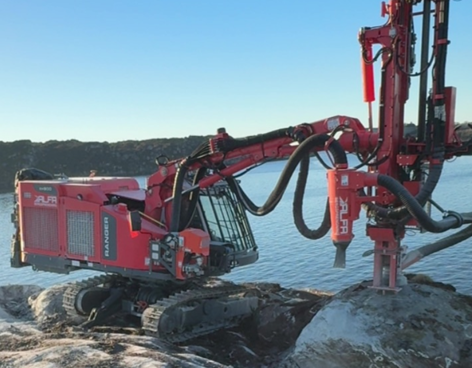
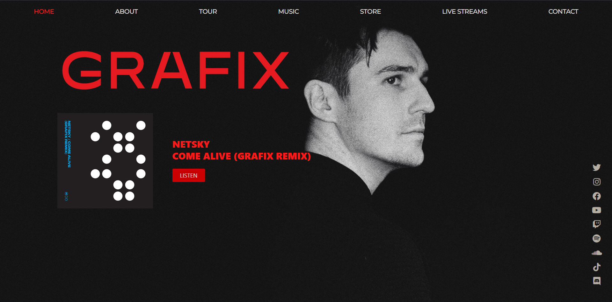

Alfa Bergsprengning Logo
Role: Visual Design, Logo Design



This page is the foundation for a combined creative and technical portfolio. It is structured to showcase visual craft, product thinking and engineering execution in one place.
Core focus areas: Graphic Design, Web Design and Software Development.
Role: Visual Design, Logo Design

Role: Graphic Identity, Web Design System, Developer Handoff

Replace this with project constraints, visual language choices, and implementation details.
Highlight album art, posters, key visuals, logo systems, and styleframes. Include intent, constraints and design rationale.
Use this section for UX flows, component libraries, responsive layouts and accessibility decisions.
Present engineering work that supports product goals. Emphasize architecture, maintainability and outcomes.
| Design | Figma, Adobe Photoshop, Adobe Illustrator, typography, color systems |
|---|---|
| Frontend | HTML, CSS/SCSS, JavaScript, responsive UI, accessibility |
| Development | Component-based architecture, APIs, Git workflows |
| Collaboration | Client communication, briefs, handoff documentation |